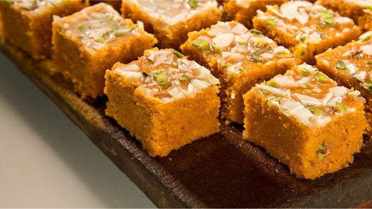

Mohan Thal

Description:
Mohan Thal is a traditional South Indian sweet dish that is made with gram flour, semolina, and ghee.
Ingriendents:
- 1 cup gram flour (besan)
- 1/2 cup semolina (rava)
- 1/2 cup ghee
- 2 cups water
- 1 cup sugar
- 1/2 teaspoon cardamom powder
- 2 tablespoons ghee
- 1/4 cup chopped cashews
- 1/4 cup raisins
Steps to make Manchurian:
- first make a batter with all-purpose flour, cornstarch, and water.
- Mix in finely chopped vegetables such as cabbage, carrots, and beans. Form the mixture into small balls and deep-fry until golden brown.
- To make the sauce, sauté garlic, ginger, and green chilies in oil, then add soy sauce, vinegar, ketchup, and chili sauce.
- Stir in cornstarch slurry and cook until the sauce thickens. Add the fried vegetable balls to the sauce and serve hot with fried rice or noodles.